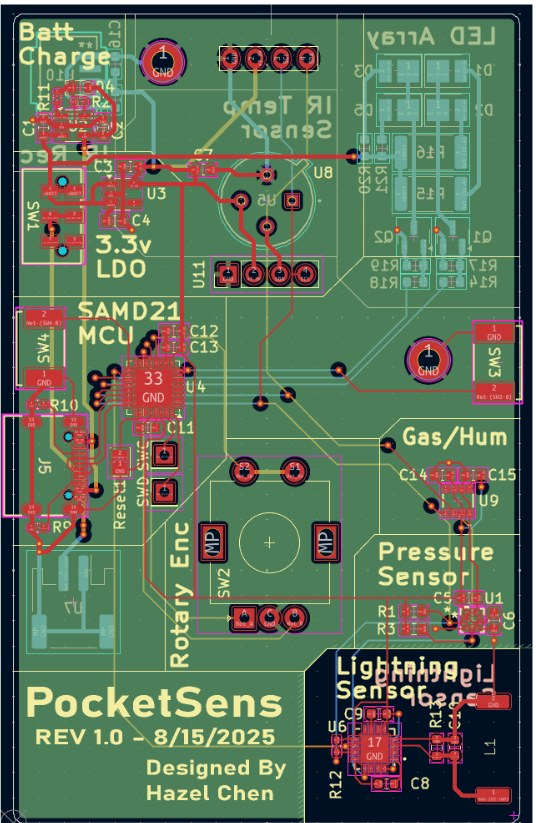

PocketSens Portable Sensor Suite
A pocket-sized device that measures environmental and physical data a smartphone can't: pressure, altitude, temperature, humidity, gas, non-contact temperature, and lightning strikes up to 40 km away.
- Role
- Designer (individual project)
- Tools
- KiCad, Arduino IDE, J-Link EDU Mini
- MCU
- SAMD21E18 (Arm Cortex-M0+)
- Status
- Rev 1.0 prototype, August 2025

| MCU | Arm Cortex-M0+ SAMD21E18 |
|---|---|
| Power and supply | Single lithium-polymer cell, MCP73831 charge IC, USB-C input |
| Gas and humidity | BME680: gas (MOX), humidity ±3% RH, pressure ±1 hPa, temperature ±1 °C, I2C |
| Lightning detection | Up to 40 km, I2C, programmable filtering |
| Infrared | TSOP6238 receiver, 0.4 W transmitter, MLX90614 non-contact thermometer |
| Altimeter | BMP390 barometric pressure and altimeter, ±0.25 m |
Build
PCBs and a solder paste stencil were fabricated by JLCPCB. I applied paste with the stencil, placed SMT parts, reflowed the boards, then inspected and reworked as needed. Through-hole parts and some SMT parts were hand-soldered.
I flashed the bootloader with a J-Link EDU Mini, after which the board takes code straight from the Arduino IDE.
